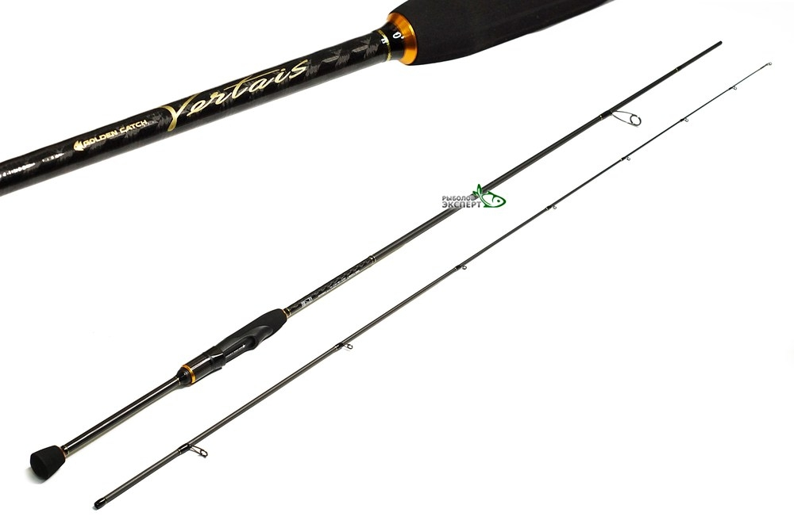
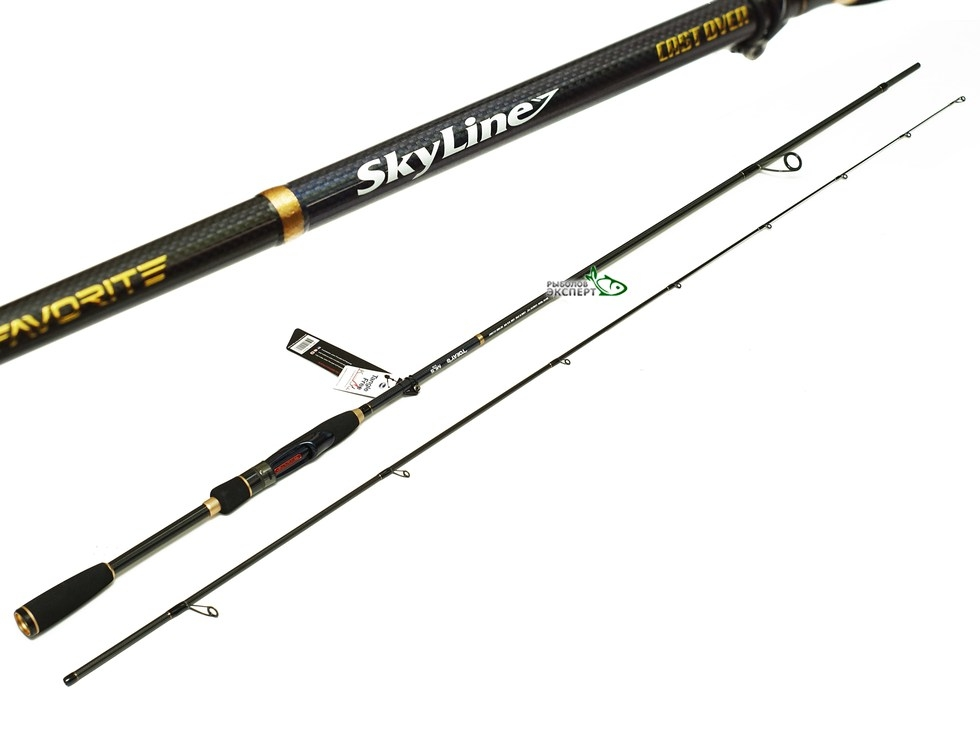
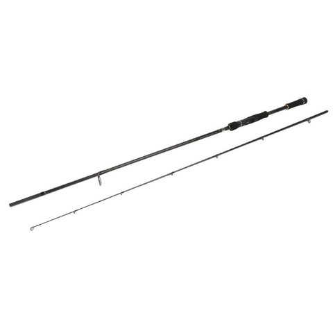

|
Бюджетный чувствительный легкий спиннинг для джига и воблеров Golden Catch Vertais VRS-762MLT 2,29 м 4-18 граммБренд Golden CatchМодель Vertais Тип удилища Спиннинговое Длина,м 2,29 Максимальный тест, г 18 Минимальный тест, г 4 Вес, г 106 Материал рукоятки EVA Строй Fast Тест, г 4-18 Количество секций 2 Кольца SIC K-Series Размеры в сложенном виде, ДхШхВ см: 118,5 2500.00 рубКУПИТЬ |

|
Спиннинг Favorite Skyline NEW SKYA-702H 2,13м 15-45г Ex.FastБренд FavoriteМодель Skyline Тип удилища Спиннинговое Длина,м 2,13 Максимальный тест, г 45 Минимальный тест, г 15 Вес, г 135 Материал рукоятки EVA Строй Extra Fast Тест, г 15-45 Количество секций 2 Кольца Fuji Alconite KR Размеры в сложенном виде, ДхШхВ см: 110 4100.00 рубКУПИТЬ |

|
РЫБОЛОВНЫЙ СПИННИНГ HELIOS RIVER STICKУдилище спиннинговое River Stick 244H 2.44m, 15-60g, 2sec Helios |